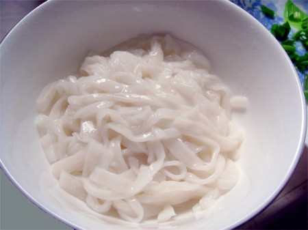

Shan Noodle
Ingredients
- 200 gram of chicken (or) pork, chopped
- 1 pack of dried shan noodle
- 1 large onion, chopped
- 3 cloves of garlic, chopped
- 1 ts of ginger, chopped
- 4 tomatoes, sliced
- 2 tbs light soy sauce
- 2 tbs soy bean
- 1 tbs of sugar
- 1 tbs of chilli powder
- 4 tbs of peanut, mashed
- 3 tbs of vegetable oil
Instructions
- Boil the dried noodle with water (200 g) until cooked.
- Heat oil in a large wok. Fry onion, garlic and ginger until fragrant.
- Add chilli powder and stir fried for a half minute.
- And add chopped chicken or pork, tomatoes and soy bean, and stir well.
- Add 1 cup of water, soy sauce and sugar and cook over a medium heat for 10 minutes until all tomatoes are crushed.
- When chicken is cooked, turn off the heat and move aside.
- put a handful of noodle into a bowl.

- Add 3 tbs of chicken curry, 1 tbs of peanuts and 1/2 table of soysauce.
- Add a few spring onions. Serve immediately with vegetable pickles and fried pork rind.